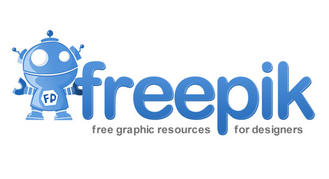
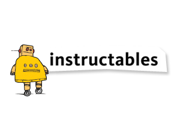

-- Web Evaluation --


Pilihlah dan identifikasi beberapa website ataupun web app (lebih dari satu) yang kamu sukai. Kalau bisa selain social media yang populer
1. www.freepik.com // 2. www.instructables.com // 3. www.w3schools.com
Mengapa website tersebut kamu pilih?
1. www.instructables.com/ web yang berisi berupa inspirasi-inspirasi hal unik berupa intruksi-intruksi berupa eksperimen untuk membuat berbagai hal, bagaimana cara membuat sepatu, tas meja dll, lengkap deh dan bisa dipraktekan dirumah seperti dibidang tehnology, membuat alarm, lampu dll.
2. www.freepik.com web berupa inspirasi dari mulai design web, photo, browsur bahkan annual report dll, web ini banyak menginpirasi saya dibidang design dll.
3. www.w3school.com tutorial web lengkap berupa teknik coding, tips and trik dll, web ini banyak menginpirasi saya dibidang programming terutama yang haus belajar untuk saya.
Deskripsikan website tersebut secara visual, dengan minimal 5 sifat.
1. www.freepik.com : cantik, Menarik, elegan,lucu, pintar
2. www.instructables.com : cantik, elegan, senang, lucu, pintar
3.www.w3school.com : cantik, elegan, senang, lucu, pintar
Deskripsikan sifat konten, fokus, atau tujuan website tersebut, dengan minimal 5 sifat.
1. www.freepik.com | website sangat seru, menarik, inspiratif, baik, indah
2. www.instructables.com | website sangat seru, menarik, cerdas, senang, serius.
3. www.w3school.com | website sangat seru, menarik, inspiratif, serius, cerdas.
yang pasti isi konten dari ketiga website tersebut sama-sama menarik simple and fast
Seberapa mudah kamu dapat menemukan hal yang kamu cari dari halaman utama? Bagaimana jika dari halaman lain?
Ketiga website tersebut sangat mudah untuk berselancar, dimana menu search ataupun menu lainnya sudah tersedia dihalaman awal, sangat mudah sekali untuk menggali seluruh konten, informasinya lengkap dengan icon yang sudah familiar dan mudah untuk dipahami.
Apa yang kamu rasakan setelah berada di website tersebut?
senang, juga membuat kita jadi smart, kreatif dan menambah ide ide,
Jika website tersebut menjual sesuatu, apakah kamu pernah membeli sesuatu yang di jual di sana? Mengapa dan mengapa tidak?
1. www.freepik.com -> Menjual hasil karya design, saya sendiri belum pernah membeli design-design tersebut karna belum dibutuhkan untuk pekerjaan saya.
2. www.instructables.com -> Ada class online untuk membuat sesuatu produk upgrade ke premium untuk class yang lebih detail.
3. www.w3school.com -> Tutorial beserta contoh web appilkasi progrraming yang sangat mudah dimengerti dalam setiap materi yang diajarkan